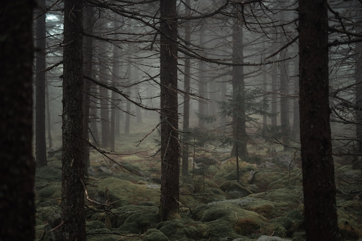
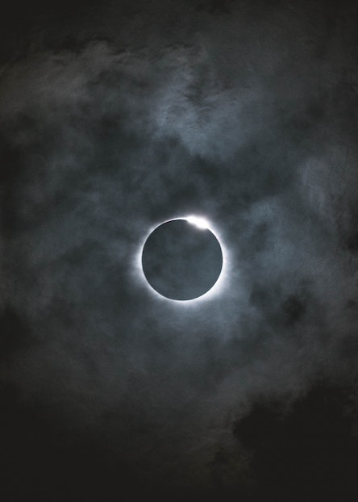
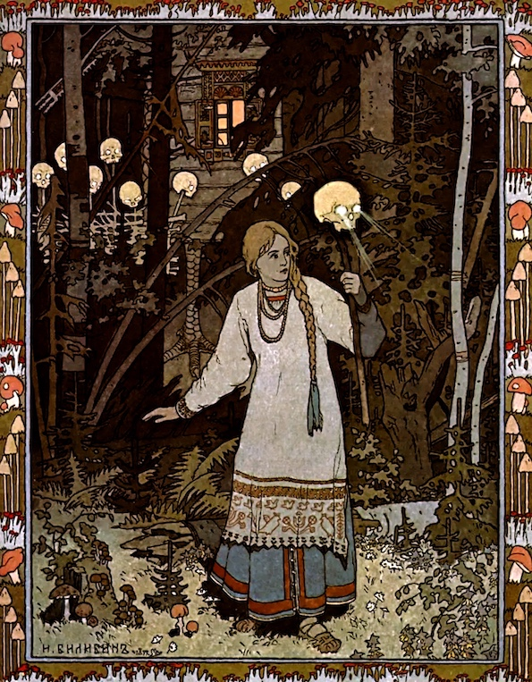
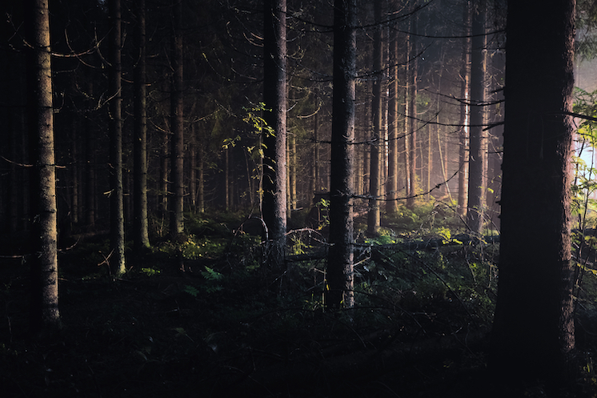
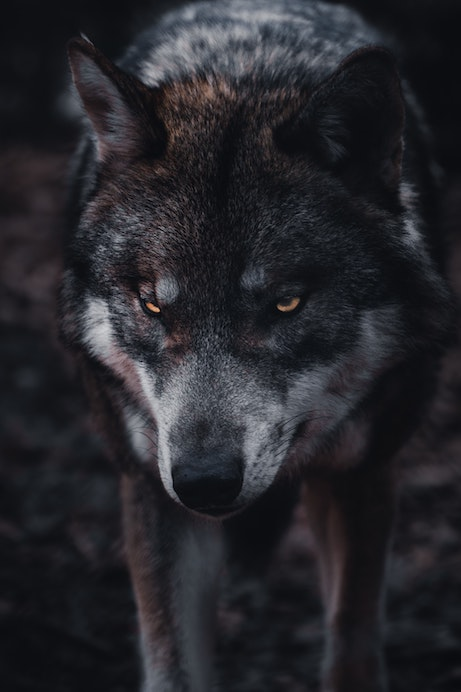
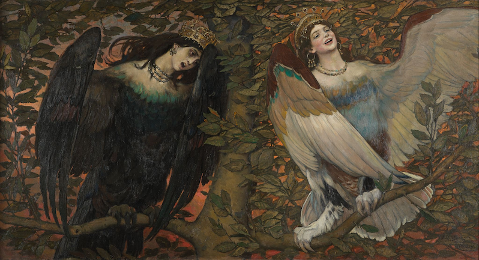

The Tsar has commanded you to go there - don't know where and to get that - don't know what. But who knows what you might encounter on your way through the dark forest...

"Ivan Tsarevich on a grey wolf". Viktor Vasnetsov, 1889. Source: Tretyakov Gallery.
"The Grey Wolf said: "Listen to me, Ivan Tsarevich, and remember: crawl over the wall, don't be afraid - it's a lucky hour, all the guards are asleep. You will see in the house on the window sill there is a golden cage and in the cage sits the Firebird." — "Ivan Tsarevich and the Grey Wolf


"Vasilisa the Beautiful leaves the home of Baba Yaga". Ivan Bilibin, 1899. Source: arthive.com.
"Vasilisa ran as fast as she could, illuminating the way with the skull's glowing eyes. As she approached the gates she wanted to throw the skull away, but suddenly from inside of it a hollow voice commanded: "Don't throw me away but take me to your stepmother." — "Vasilisa the Beautiful"


"Once Ivan led his colt out into a pasture it suddenly turned into a strong and beautiful steed. Ivan mounted him and rode to the palace of Koschei the Deathless. Once he reached the palace he found Marya Morevna, put her on his new magical horse and rode off." — "Marya Morevna"

"Sirin and Alkonost. The song of Happiness and Sorrow". Mikhail Vrubel, 1896. Source: Tretyakov Gallery.